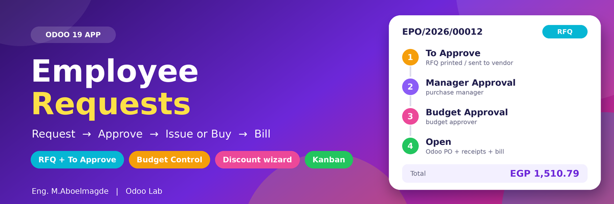
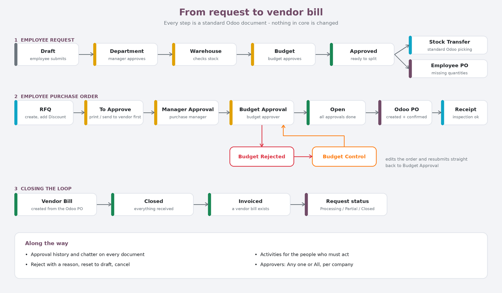
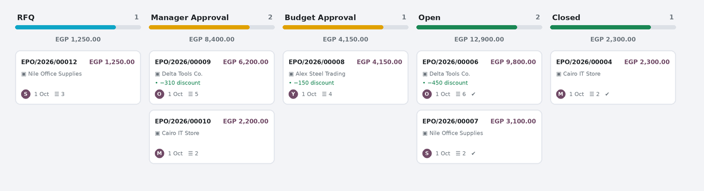
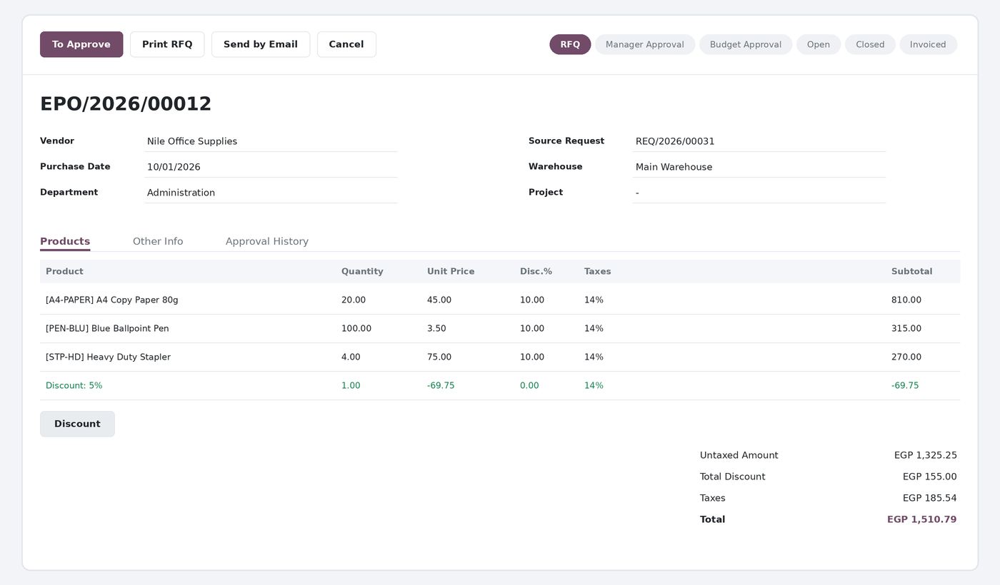
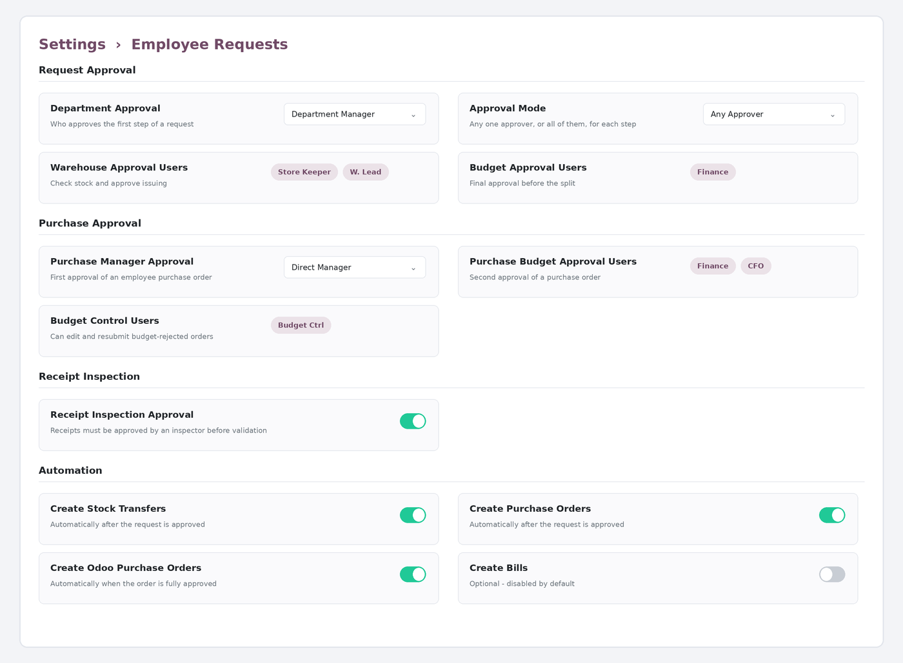

Request → approve → issue from stock or buy → receive → bill. One flow on standard Odoo documents, with project stock that stays with its project.

Employees ask for materials. The system checks every warehouse, issues what is in stock through standard Odoo transfers and sends the missing quantities to purchasing, where they become purchase orders with their own approvals. Everything is traced back to the request, and to the project it belongs to.
Department, warehouse and budget approval, for requests and for purchase orders. Any-one or all-must-approve modes, with reasons and full history.
Available stock goes to a stock transfer, the missing quantity to a purchase order. Partial processing and duplicate protection included.
The project fills itself on the stock order from the request or the purchase order. One transfer and one purchase order per project, never mixed.
Stock bought for a project stays with it. Issuing it to another project needs the approval of that project's manager.
Filter every tile by project and see one card per project: open requests, transfers, pending approvals and the value of stock held.
Requests, purchases, stock consumption, project stock and the approval history, also reachable from the Inventory reporting menu.

Materials bought for a project should not quietly disappear into another one. The module keeps track of what each project holds and asks for approval before anyone takes it.
Stock orders take the project of the request line. Receipts take it from the purchase order. A request with several projects creates one stock order and one purchase order per project.
Held = received for the project + allocated by hand − issued to it, per warehouse and product. Always visible in Project Stock Report.
A transfer that takes stock held by another project is blocked: no reservation, no validation. The requester gives a reason, the owner project's manager approves or rejects with a reason.
Set aside stock that is already in the warehouse for a project, and release it when it is no longer needed.
Who asked, who approved or rejected, when and why, kept in a dedicated report.
The project of a validated transfer cannot be changed, and an approval is cancelled automatically if quantities or the project change afterwards.
Built from the project inventory meeting: stock is reserved for a project, moved between projects with approval and returned to general stock when it is no longer needed.
From the General Projects Warehouse (set in Settings), or directly to the project when it is received on the project's purchase order.
A Replace Stock button on the project pulls products from any warehouse. If the stock belongs to another project, the owner's approval is required.
The approval shows how much is taken from which project and what it keeps, so you know when a purchase order may be needed for them.
When a project needs nothing more, release its reservation and the quantity returns to general stock.
Warehouse, project, product, received, allocated, issued and held quantity, from Inventory and from the app.
A daily notice before lots expire, plus an Expiry Date Report with expired / within 30, 60, 90 days filters and a dashboard tile.
A Product Coding tab on the product page builds the internal reference from fields the product already has.
| Part | Where it comes from |
|---|---|
| Category & sub-category | The Product Category of the product: the Code field of its category and of every parent above it, top first (e.g. EL + CB) |
| Color | The values of the attribute marked Color, each with its own Code (first letter by default, editable) |
| Size | The values of the attribute marked Size, with their own Code, the same way |
| Result | ELCBRL: filled on the product, one code per variant, with a warning if the code already exists |
Starts with Needs my action, then the request pipeline and orders. Pick a project in the new Project filter, or click a project card, and every tile follows.
One select next to period and department. Requests, purchase orders and transfers are all filtered on it.
Value of stock held, open requests, open transfers, items held and the number of approvals waiting, with a shortcut to the project stock.
Stock held for projects, transfers waiting project approval, manual allocations and open project transfers.
Grouped by stage with column totals, vendor, amount, discount, source request, activities and a tick once the Odoo purchase order exists.
Print or email the RFQ, then press To Approve. The printout says “Request for Quotation” first and “Purchase Order” afterwards.
Per-line price, discount and taxes, global or fixed discounts like in Sales, agreements, project and analytic account per line.


Everything is set in Settings → Employee Requests. Users picked there automatically receive the matching access group.

| Setting | What it does |
|---|---|
| Department Approval | First step of a request: the department manager, or specific users. |
| Approval Mode | Any one approver is enough, or all of them must approve each step. |
| Warehouse / Budget Approval | Who checks stock and who gives the budget approval of a request. |
| Purchase Manager / Budget Approval | The two approvals of a purchase order. |
| Budget Control Users | Can edit and resubmit budget-rejected orders. |
| Receipt Inspection Approval | Receipts must be approved by an inspector before validation. |
| Project Stock Lock | Turn the lock on or off, and choose who approves: the project manager of the stock owner, or specific users. |
| Automation | Create stock transfers, purchase orders and Odoo purchase orders automatically; bills are optional. |
| Group | Can |
|---|---|
| Employee Request User | Create, read and edit own requests; sees the app. |
| Create for Employees | Create requests on behalf of other employees. |
| All Documents | Read all requests, stock transfers and purchase orders. |
| Dashboard | Open the dashboard. |
| Warehouse / Budget Approver | Approve their step of a request. |
| Employee Purchase User / Manager | Create and edit employee purchase orders. |
| Budget Control User | Edit and resubmit budget-rejected purchase orders. |
| Project Stock Lock Approver | Approve issuing stock held for another project. |
| Employee Request Manager | Read everything, reset and cancel requests. |
One compact field (available → forecast, colour coded) with a popover: on hand, reserved, incoming, outgoing, the other locations that hold the product (free of on hand) and which project holds how much, plus open transfers.
Images, UoM, stock and one-click add / remove.
Smart buttons link the request, purchase order, receipts and bills. Chatter and activities on every document.
Large buttons, bigger inputs and a single full-width main action on small screens.
The dashboard follows the Odoo theme.
Reset to draft, cancel, approval history on every document.
No. It extends standard models and views; transfers, purchase orders, receipts and bills are the normal Odoo documents.
Stock received on purchase orders that belong to the project, plus quantities allocated by hand. Stock that was already in the warehouse is free until you allocate it.
Yes, in Settings → Employee Requests → Project Stock Lock. Projects are still filled on documents and shown on the reports.
By default the project manager of the project holding the stock, falling back to the users chosen in the settings.
Yes. Availability, holds and the report are computed per warehouse and per company.
Technical name: mo_employee_request · Odoo 19 · depends on Contacts/HR, Project, Inventory (stock, stock_account, product_expiry), Purchase (purchase, purchase_stock, purchase_requisition), Accounting and Analytic · no core files edited · demo data included · LGPL-3.
Author: Eng. M.Aboelmagde · Odoo Lab (@odoolab)